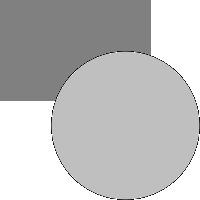

- Index
 ImageMagick Examples Preface and Index
ImageMagick Examples Preface and Index
- Known and Fixed Bugs Index
Demonstrantion of a Semi-transparent white on transparent black bug, found in
ImageMagick 5.5.7 and earlier. They were fixed during the ImageMagick version
6 development.
The background pattern on this page was choosen so that any transparency would
be visible in a web browser, that understands PNG transparency (like Mozilla
basied browsers).
This page is for reference for older IM users who may still have to deal with
this bug. The examples on this page have not been re-created when/if the bug
was fixed.
Generate an opaque rectangle
magick -size 200x200 xc:none -fill "#808080" \
-draw "rectangle 0,0 150,100" rectangle.png
|
and a white circle (Semi-Transparent Bug in -draw command happens here)
magick -size 200x200 xc:none -fill "#FFFFFF" \
-draw "circle 125,125 73,73" circle_white.png
|
If the bug happened the you will see dark, near black, edges to the pure white
circle.
Make it semi-transparent
magick circle_white.png -fill "#FFFFFF80" -opaque "#FFFFFF" circle.png
|
WARNING: This is not a practical example of generating
a semi-transparent white circle, and should not be taken as a the best method
to do so.
Overlay circle on rectangle (Semi-Transparency Bug in overlays happens here)
magick composite circle.png rectangle.png alpha.png
|
![[IM Output]](alpha.png)
If the bug happens here, the result should be that while the overlays grey
rectangle becomes a lighter color, the rest of the semi-transparent white
circle becomes grey in color, instead of remaining unchanged.
Overlay the above result onto a white background, so we can see the result on
browsers like IE.
magick composite alpha.png -size 200x200 xc:white result.png
|

The final result above should be a only a slight whitening of the grey
rectangle, where the circle overlaps. Anywhere else and the white circle
should disappear (semi-transparent white on white gives white!).
If the bug is present you will see a grey circle instead, and due to the
presence of the bug in the "-draw" command, the edges of the
circle will appear even darker, instead of shading into the white background.
Correct results with IM
This is what the above image should look like:
NOTE: Due to the inaccurate way the white circle is made semi-transparent
(using "
-fill" and "
-opaque") there is a thin almost
white' border between the dark rectangle and the overlayed circle. This is
not a bug, just incorrect image handling.
If I had generated the semi-transparent circle using this (more correct)
command instead (only valid in IMv7)...
magick circle_white.png -channel A -fx A/2 circle.png
|
Then we will not see the thin white border in the final result.
![[IM Output]](result_correct.png)
![[IM Output]](result_correct2.png)
![[version image]](version.gif)
{kind=link}
{kind=link}
{kind=link}
{kind=link}